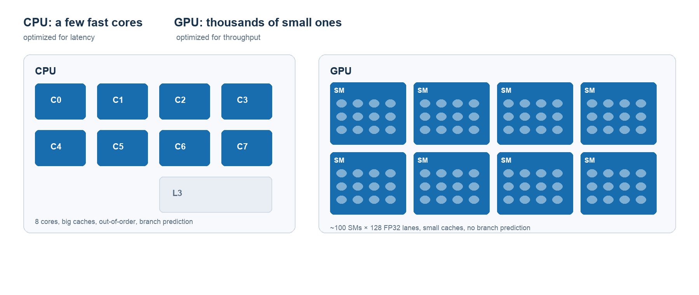
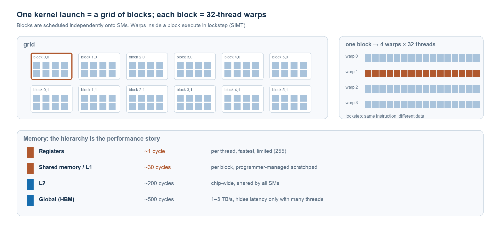
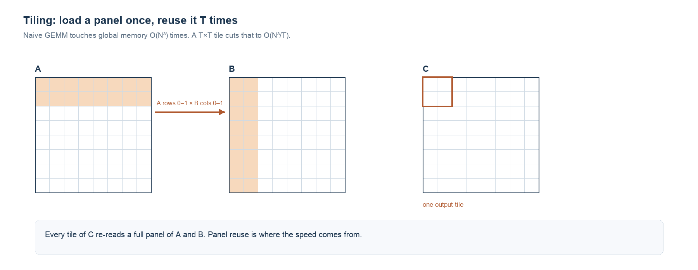

NOTE 15 / 计算基础 · CUDA 与算子
CUDA 与算子
GPU 快的不是每个核，而是同一时刻有几千份活正在飞。CUDA 把这件硬件事实，抽象成了网格、线程块和共享内存。
这篇想解释清楚两件事：CUDA 到底做了什么让程序变快，以及「算子」这个词在工程里指什么、它是怎么跑起来的。
范围。讲执行模型与访存层次，不涉及具体 API 手把手。数字是数量级，不同代际的卡差别很大。
1. CUDA 是什么
它不是一个语言，是三层东西叠在一起的平台。
第一层是硬件：一块由许多 SM（流式多处理器）组成的芯片，每个 SM 里有几十到上百个执行单元，外接几 GB 到几十 GB 的显存。
第二层是编程模型：C/C++ 的扩展。你写一个标了 __global__ 的函数，用 <<<blocks, threads>>> 启动它，NVIDIA 的编译器把它编译成能在 GPU 上跑的机器码，运行时负责把它塞进硬件。
第三层是生态：cuBLAS、cuDNN、TensorRT、nvJPEG 这些库，以及 PyTorch、TensorFlow 底下那一整层。绝大多数人不会直接写 kernel，而是通过这一层间接使用 GPU。
三层的分工是：硬件提供并行度，模型让你能描述并行，生态把常见的并行模式提前写好。
2. 为什么快：不是核快，是在飞的活多
先看一个常被忽略的事实：GPU 的单核比 CPU 慢。它的频率更低，没有乱序执行，没有复杂的分支预测，缓存也小得多。
它赢在另一个维度。

CPU 有几十个核，每个核都在拼命把单条指令的延迟压到最低：预测分支、重排指令、预取数据。它擅长「一件事尽快做完」。
GPU 有几千个线程位置。它的策略完全相反：不打算让任何一条指令变快，而是让很多条指令同时在飞。
这里有个关键机制叫延迟隐藏。访问一次显存要等四五百个周期，如果只有一个线程在跑，这段等待就是纯浪费。但一个 SM 上同时驻留着几十个 warp，第一个 warp 卡在等数据，调度器立刻切到第二个、第三个——等第一个的数据回来，它已经等了几十个 warp 的时间，看上去「不卡」。
所以 GPU 的加速不是把 1 秒变成 0.01 秒，而是把原本互相等待的时间填满。这也决定了它的前提：任务必须能拆成大量互不依赖的小工作。拆不开，几千个线程位置就是空的。
3. 执行模型：网格、线程块、warp
CUDA 用三层结构描述并行。

网格（grid）：一次 kernel 启动对应的全部线程。
线程块（block）：网格切成若干块，块与块之间可以完全独立地调度到不同的 SM 上，没有先后顺序保证。
warp：硬件真正的执行单位，32 个线程一组。同一个 warp 里的 32 个线程执行同一条指令，只是数据不同——这叫 SIMT。如果它们在一个条件分支里走了不同路径，硬件会把两条路径串行各跑一遍，这叫 warp 分歧，是性能杀手。
块内可以用 __syncthreads() 做屏障同步，块之间不行（除非用协作组）。这个限制决定了算法的组织方式：凡是需要全局同步的步骤，就得拆成多个 kernel 或者两阶段完成。
4. 内存层次：性能真正的战场
如果只记住一句，就是这句：GPU 上的算子快不快，几乎全看它怎么用内存。
看图 2 下半部分那张表。寄存器一个周期，共享内存三十个周期，L2 两百个周期，显存五百个周期——差了三个数量级。
于是所有高性能 kernel 都遵循同一个套路：把要重复使用的数据搬到离计算单元最近的地方，算完再走。
还有一个容易被忽略的细节：合并访存。当一个 warp 的 32 个线程访问连续的一段地址时，硬件会把它们合并成一次内存事务；如果它们东一个西一个，就要发 32 次。同样的字节数，带宽差一个数量级。
所以写 kernel 的第一原则不是「怎么算得快」，而是「怎么让 32 个线程一次把数据拿回来」。
5. 加速怎么发生：以矩阵乘法为例
矩阵乘法是最好用的例子，因为它有明确的「复用」可以榨。
朴素写法是三重循环：每个输出元素 C[i][j]，都要读 A 的一整行和 B 的一整列。N×N 的矩阵算下来，全局内存要读 2N³ 次。
但同一行 A 被 N 个输出元素共用，同一列 B 也被 N 个输出元素共用。这些复用全被浪费了。

分块（tiling）的做法是：把 C 切成若干 T×T 的块，算一块的时候，把 A 的对应行面板和 B 的列面板先搬到共享内存，然后块内所有线程反复用它。
这样每个面板只从显存读一次，被复用 T 次。全局访问从 2N³ 降到 2N³/T——计算量一点没变，省掉的全是重复读。
分块省掉了多少次全局读
左边是输出矩阵 C 的分块，橙色是当前正在算的块，它的行和列对应的就是 A、B 要搬进共享内存的面板。右边把两种写法的全局读次数画在一起。
- 朴素全局读
- —
- 分块全局读
- —
- 访存减少
- —
- 块数
- —
—
6. 算子是什么
这个词在两个语境里指两件东西，很容易混。
在深度学习框架里，算子是一个数学操作：矩阵乘、卷积、softmax、LayerNorm、ReLU。它是计算图上的一个节点，有输入张量、输出张量和形状推导规则。你写 torch.matmul，用的就是这样一个算子。
在 CUDA 里，算子最终落成一个或多个 kernel——也就是真正在 GPU 上跑的那些函数。
两者的关系是：一个算子可以有多种实现，框架在运行时挑一个给你。同一个卷积，可能走 cuDNN 的某个融合 kernel，也可能走手写的特化版本，还可能走编译器生成的。挑哪个，取决于形状、数据类型、显存布局，甚至当时哪块缓存是热的。
所以「算子性能」其实是两层：算法层面选了什么分解方式，和实现层面访存组织得好不好。
7. 算子怎么工作：四个决定
不管什么算子，写出来都要回答四个问题。
第一，怎么切分。把输出张量切成块，每个线程块负责一块。GEMM 是两级分块（块级、线程级），卷积是先把输出按空间切块，再在内层展开成矩阵乘。
第二，怎么访存。块内要复用的数据放进共享内存；相邻线程访问相邻地址，保证合并；必要时做向量化读取，一次取 128 位而不是 32 位。
第三，怎么映射线程。哪个维度对应 threadIdx.x，哪个对应 threadIdx.y。映射方式直接决定了访存是否连续——这是最容易写错、也最影响性能的一步。
第四，怎么处理边界。当形状不是块大小的整数倍时，多出来的线程要早退，又不能破坏同步。这是 kernel 里一半的 if 语句的来源。
拿 softmax 举例，它比 GEMM 更能说明问题。softmax 要减去最大值再取指数求和，天然是两趟：第一趟求最大值和和，第二趟才能归一化。对一行做没问题，但如果一整行放不进一个线程块，就得拆成跨块归约——两个 kernel，中间落一次显存。后来有人把两趟合成一趟（在线 softmax），代价是要边算边修正，这就是 flash attention 那类工作的起点。
再往上一层是融合：把几个算子合成一个 kernel，省掉中间结果写回显存再读出来的往返。在带宽受限的模型里，这一步的收益往往比把单个算子优化 10% 更大。
8. 收尾
回头看，CUDA 没有发明新的数学，也没有让单个核变快。它做了三件事：把并行拆成网格与块，让同一时刻有几千份活在飞；把内存分层，让复用发生在离计算最近的地方；把这两件事抽象成一套可编程的模型。
而算子，就是这套模型在具体问题上的落地。同一个矩阵乘，朴素写法是「算得对」，分块写法是「少读几次」——差别从来不在算术上。
相关笔记：nvJPEG 基础原理（同样是「把能并行的搬到 GPU」） · 优化器与 Muon（训练侧的计算） · 把大模型放在闭环外面（推理延迟从哪来）